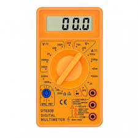
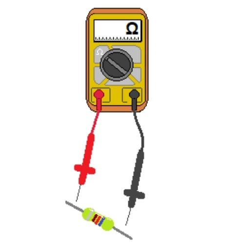

como hallar el valor de una resistencia
Simbolo de la resistencia
Matematicamente
Las resistencias se pueden asociar en arreglos serie, paralelo o mixto. Para hallar el valor de las resistencias totales se utilizan ecuaciones fáciles a operar. nos basaremos en el siguiente codigo de colores.

Para saber el valor de un resistencia tenemos que fijarnos que tiene 3 bandas de colores seguidas y una cuarta más separada. Las 3 primeras bandas nos dice su valor, la cuarta banda nos indica la tolerancia, es decir el valor + - el valor que puede tener por encima o por debajo del valor que marcan las 3 primeras bandas.
Multimetro
El multimetro es un instrumento de medición que permite medir valores reales de las resistencias, para comprarlos con los valores matematicos o teóricos obtenidos. Se debe tener en cuenta que, al momento de medir las resistencias con el multimetro, el circuito debe estar sin voltaje.

como usar un multimetro?
En primer lugar siempre debe saber qué es lo que va a medir, para
de esta forma posicionar el conmutador en una forma u otra.
El aparato cuenta con dos terminales cuyas polaridades se
caracterizan por colores: Negro (-) y Rojo (+).
Podemos encontrar principalmente cuatro tipos de mediciones.
AC V. Que es usada para las mediciones de tensiones de corriente
alterna con expresión en voltios.
DC V. Para mediciones de tensiones de una corriente continua que
se expresa en voltios.
DC A. Para tensiones de corriente continua que se expresa en el
aparato en miliamperios.
Ohmios. Son usados para medir resistencias eléctricas y comprobar
la continuidad en circuitos.
Como medir resistencias
Primer paso
ubica el selector en el sistema de Ohmios
Segundo paso
Pon cada cable con cada uno de los extremos de la resistencia, no importa su polaridad ya que las resistencias no tienen polaridad.

Como medir un circuito
Pon cada punta de los cables en cada extremo del circuito
Listo asi finalizamos el mini tutorial de como medir resistencias y circuitos con el multimetro.
EJERCICIOS
Simbologia
Recuerda que debes implementarlos en el protoboard, llena los
datos para practicar.
Remplaza los simbolos por tus resistencias.
Tablas De Datos
B1 es igual a Linea de color uno, B2 es igual a Linea de color dos y asi susesivamente